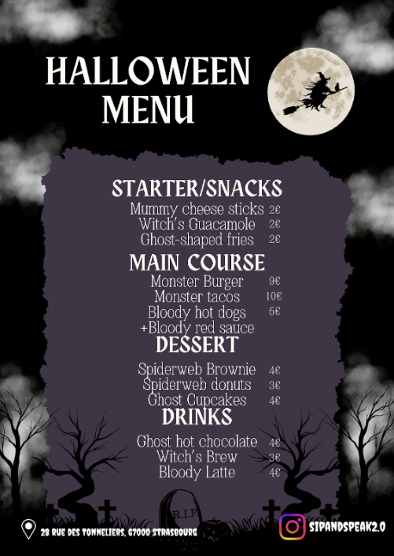

Nos Affiches
Découvrez nos dernières affiches

Notre menue pendant la période d'Halloween.

Affiche Janvier 2024
Programme du mois de janvier
Affiche Janvier 2024
Programme du mois de janvier
Les affiches sont régulièrement mises à jour avec notre programmation